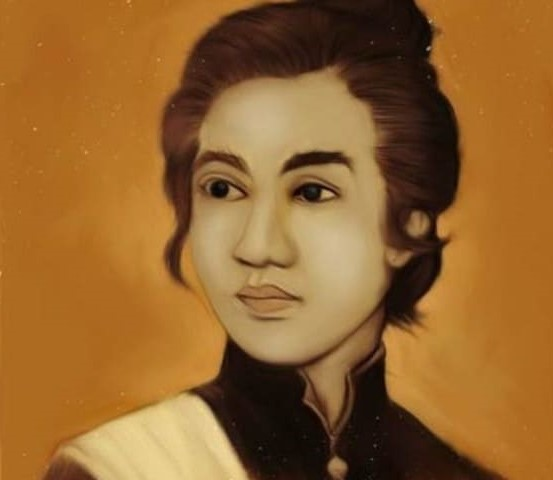

Cut Nyak Dhien
Pejuang Wanita yang Ditakuti Belanda
Antara 12 Mei 1848 – 6 November 1908. Cut Nyak Dhien adalah seorang Pahlawan Nasional Indonesia dari Aceh yang berjuang melawan Belanda pada masa Perang Aceh. Setelah wafatnya Cut Nyak Dhien, beliau mendapatkan julukan sebagai ibu perbu atau ibu suci
